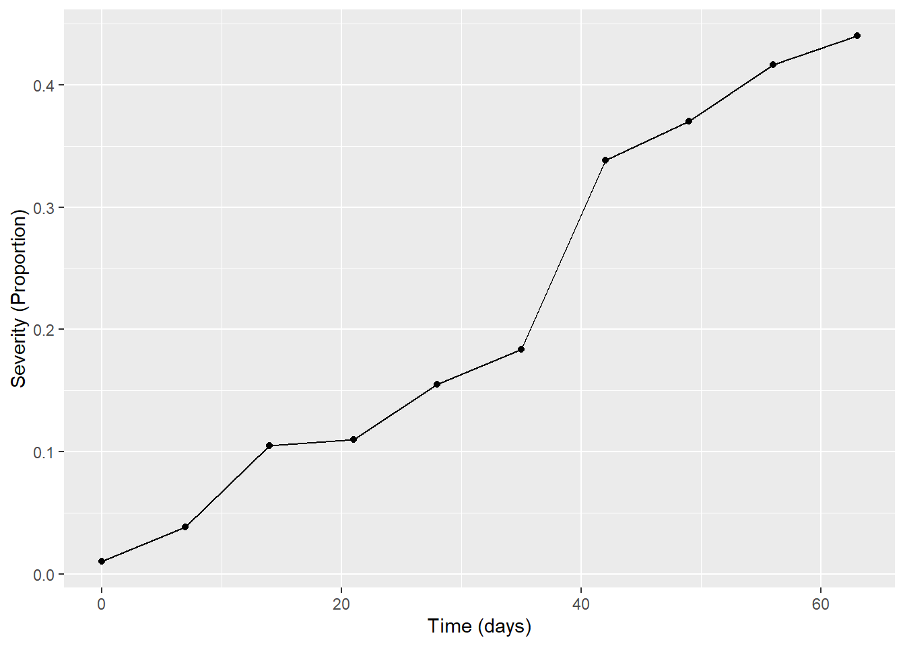
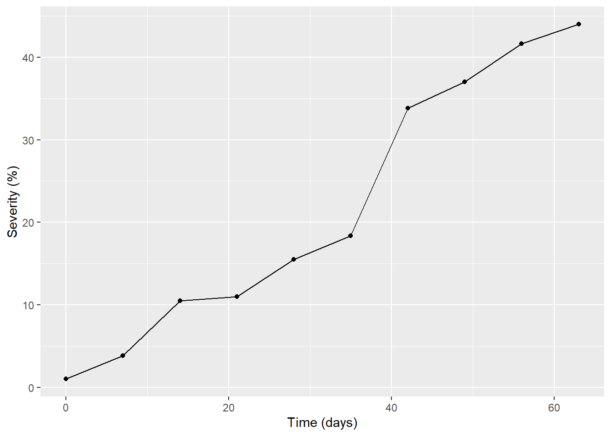
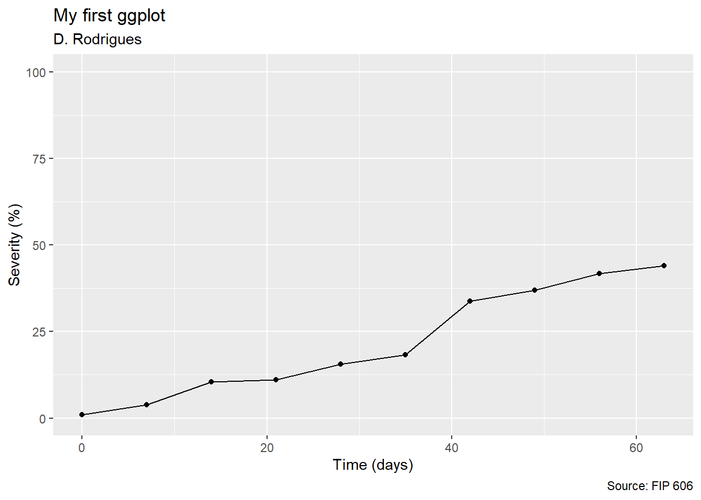
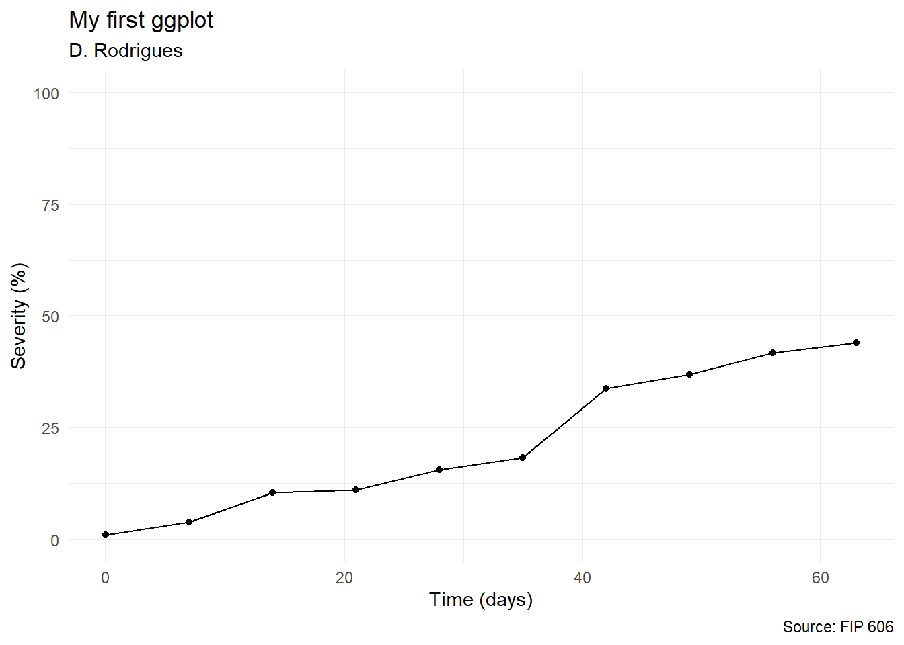
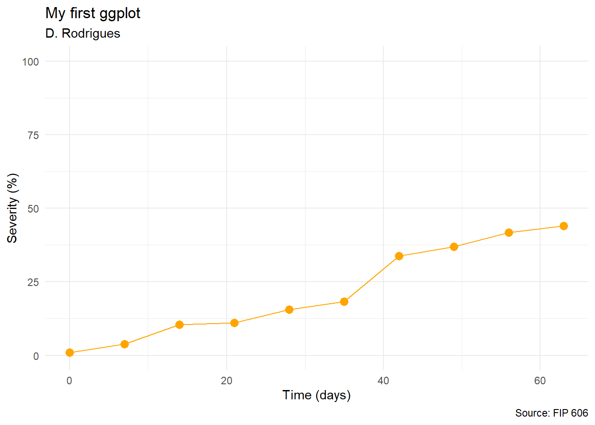
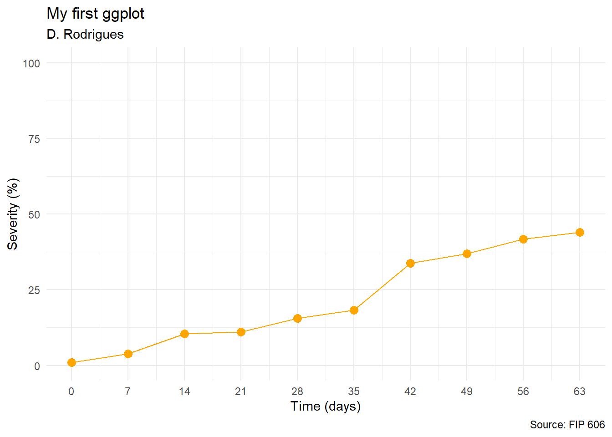

No ggplot, os gráficos são construídos camada por camada. A primeira camada é dada pela função “ggplot()”, onde é determinada a estética da distribuição dos dados que serão trabalhados. A segunda camada é dada pela função “geom_()” que vai definir o tipo de gráfico gerado.
warning(FALSE)library (tidyverse)mg <-read_csv("dados-diversos.csv")#Depois de carregar o pacote de interesse e trazer os dados que serão trabalhados para dentro do R, começamos a construção do gráfico. É importante lembrar que o pacote "ggplot2", responsável pela construção dos gráfico, está dentro do pacote "tidyverse".mg |>ggplot (aes(Irrigation, severity, shape = Irrigation))+geom_point(alpha =0.5)
#A função escolhida para gerar a segunda camada do gráfico foi "geom_point()", gerando um gráfico de pontos ou dispersão.
É possível ainda criar um subconjunto de um data frame, usando a função “filter()”.
#É interessante que existe a possibilidade trabalhar diferentes modelos de gráficos para melhor explorar os dados, como nesse caso onde foi usado "geom_point()" e "geom_line()".#Uma outra observação interessante é a função "facet". Essa é uma funcionalidade útil do "ggplot2", pois permite usar facets para replicar um gráfico para cada categoria de uma variável.
Com a função “group_by()” a variável existente é convertida é um agrupado onde as operações são executadas por um grupo. Já a função “summarize()” resume um conjunto de dados utilizando alguma métrica de interesse.
Com o gráfico pronto é possível adicionar a ele título, subtítulo, legenda, fonte e qualquer outra informação que for interessante ser apresentadada. Essas informações também são consideradas camadas e são criadss ou modificados pela função “labs()”.
mg2 |>ggplot (aes(day, sev))+geom_point()+geom_line()+labs (x ="Time (days)", y ="Severity (Proportion)")

mg2 |>ggplot (aes(day, sev*100))+geom_point()+geom_line()+labs (x ="Time (days)", y ="Severity (%)")

#"*100" para respostas em porcentagem.
mg2 |>ggplot (aes(day, sev*100))+geom_point()+geom_line()+ylim (0,100)+labs (x ="Time (days)", y ="Severity (%)", title ="My first ggplot", subtitle ="D. Rodrigues", caption ="Source: FIP 606")

mg2 |>ggplot (aes(day, sev*100))+geom_point()+geom_line()+labs (x ="Time (days)", y ="Severity (%)")
mg2 |>ggplot (aes(day, sev*100))+geom_point()+geom_line()+ylim (0,100)+labs (x ="Time (days)", y ="Severity (%)", title ="My first ggplot", subtitle ="D. Rodrigues", caption ="Source: FIP 606")+theme_minimal()

#"theme_()" permite escolher um tema para o gráfico, que vai variar de acordo com a escolha de cada um.
Dentro da função “geom_()” é possível personalizar a apresentação das formas que foram definidas para o gráfico, adicionando cores, linhas mais expressivas, pontos maiores, etc.
mg2 |>ggplot (aes(day, sev*100))+geom_point(size =3, color ="orange")+geom_line(color ="orange")+ylim (0,100)+labs (x ="Time (days)", y ="Severity (%)", title ="My first ggplot", subtitle ="D. Rodrigues", caption ="Source: FIP 606")+theme_minimal()

#"ylim()" permite escolher os valores de variação do eixo y.
mg2 |>ggplot (aes(day, sev*100))+geom_point(size =3, color ="orange")+geom_line(color ="orange")+ylim (0,100)+scale_x_continuous(breaks =c(0, 7, 14, 21, 28, 35, 42, 49, 56, 63))+labs (x ="Time (days)", y ="Severity (%)", title ="My first ggplot", subtitle ="D. Rodrigues", caption ="Source: FIP 606")+theme_minimal()

#"scale_x_continuous()" permite escolher os valores de variação do eixo x.#Para salvar seu gráfico em forma de imagem, use a função "ggsave()", escolha um nome e na frente ".png". É possível também definir a cor de fundo da imagem que o gráfico será salvo, bem como suas dimensões.ggsave("myfirstggplot.png", bg ="white", width =4, height =3)
mg2 |>ggplot (aes(day, sev*100))+geom_line(color ="orange")+geom_point(size =3, color ="orange")+scale_x_continuous(breaks =c(0, 7, 14, 21, 28, 35, 42, 49, 56, 63))+scale_x_continuous(n.breaks =5, limits =c(0,100))+labs (x ="Time (days)", y ="Severity (%)", title ="My first ggplot", subtitle ="D. Rodrigues", caption ="Source: FIP 606")+theme_minimal()